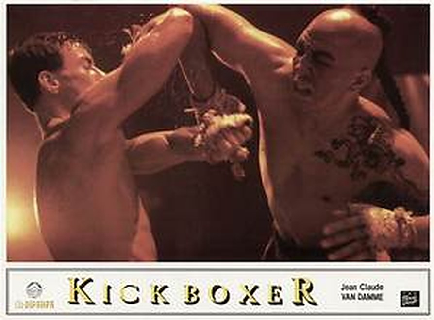
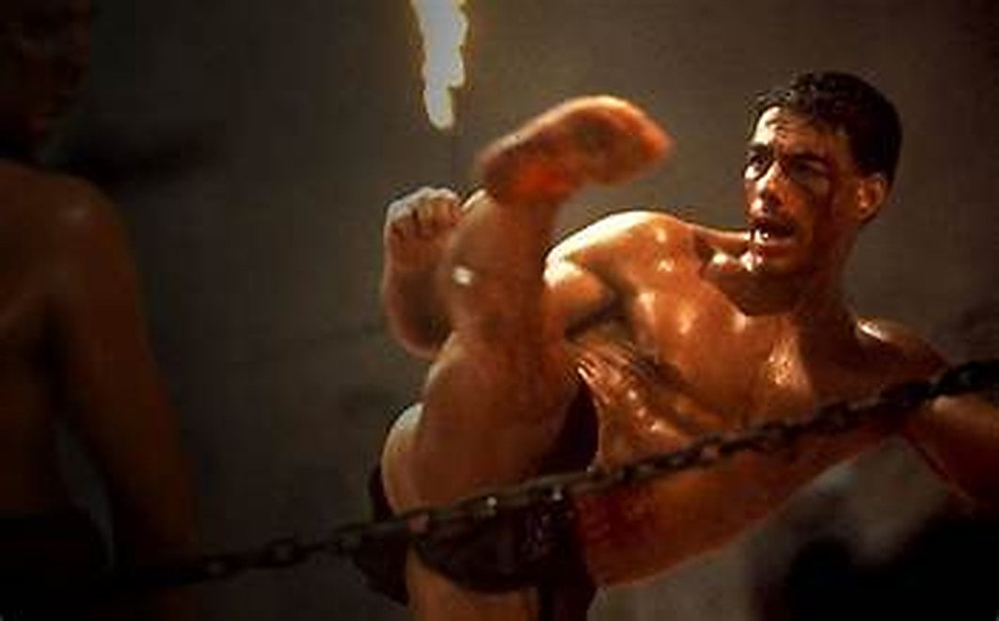

J'ai découvert Kickboxer après Bloodsport. À l'époque, je faisais du karaté avec mon meilleur ami, et c'était lui le fan de ce film : je lui avais fait découvrir Bloodsport, il m'a fait voir Kickboxer en retour.
Dans le film, il y avait Tong Po, l'adversaire de Van Damme. Il était impressionnant, et on attendait impatiemment le moment où Van Damme allait le battre.
Ce soir, on retourne s'entraîner à Bangkok.

L'affiche de Kickboxer
Kickboxer est un film d'action américain de 1989, réalisé par Mark DiSalle et David Worth. Il est sorti aux États-Unis le 8 septembre 1989 chez The Cannon Group, et dure 103 minutes. Le scénario est de Glenn A. Bruce, sur une histoire de Mark DiSalle et de Jean-Claude Van Damme lui-même.
Van Damme joue Kurt Sloane. Son frère Eric (Dennis Alexio) est un champion de kickboxing. Face à eux, Tong Po, interprété par Michel Qissi, champion redoutable de muay-thaï. Parmi les autres rôles, Dennis Chan joue Xian Chow, le maître qui entraîne Kurt.
Le point de départ : Eric est paralysé lors d'un combat à Bangkok par Tong Po, et Kurt veut se venger.
Le film a été tourné principalement en Thaïlande (Bangkok, Ayutthaya) et à Hong Kong. La musique est de Paul Hertzog, avec des chansons de Stan Bush.
Il a donné naissance à plusieurs suites, sans Van Damme, puis à un remake en 2016, Kickboxer: Vengeance.
Kickboxer est produit par Mark DiSalle, par Kings Road Entertainment, et distribué par The Cannon Group. Le budget est de 2,7 millions de dollars. DiSalle réalise avec David Worth. L'histoire est signée DiSalle et Jean-Claude Van Damme, et le scénario de Glenn A. Bruce.
La distribution joue sur des profils réels. Dennis Alexio, qui joue Eric, est présenté comme un ancien champion du monde de kickboxing. Michel Qissi, acteur marocain, porte un maquillage épais pour Tong Po : selon ses propres mots, seuls ceux qui l'avaient vu combattre pouvaient le reconnaître à sa façon de bouger.
Le tournage se déroule surtout en Thaïlande, à Bangkok et à Ayutthaya, où les scènes d'entraînement de la « Stone City » sont filmées aux ruines du Wat Mahathat. Une grande partie du film est aussi tournée à Hong Kong.
Cannon choisit le week-end creux qui suit Labor Day pour la sortie, le 8 septembre 1989. Le film démarre avec 4,1 millions de dollars sur 973 écrans et totalise environ 14,7 millions de dollars aux États-Unis. Un chiffre postérieur évoque environ 50 millions.
La critique est sévère : 36 % sur Rotten Tomatoes (11 critiques) et 33 % sur Metacritic (4 critiques). Le film est pourtant considéré comme le premier à avoir fait découvrir le muay-thaï au grand public, et le maquillage de Tong Po aurait inspiré Goro dans Mortal Kombat.

Carte de salle : un combat de Kickboxer
Kurt Sloane veut venger son frère Eric, un champion de kickboxing, paralysé à Bangkok lors d'un combat contre Tong Po, champion redoutable de muay-thaï.
Pour l'affronter, Kurt doit apprendre. Il s'entraîne auprès d'un maître, Xian Chow, dans le cadre de la « Stone City », tournée dans les ruines du Wat Mahathat à Ayutthaya.
La suite oppose Kurt à Tong Po.
Kickboxer applique une recette simple : un frère blessé, une vengeance, un maître, un entraînement et un adversaire à abattre. Le critique Chris Hicks y voit un décalque de Karate Kid, avec des éléments de Rocky et de Rambo.
Il est décrit comme le premier film à avoir fait découvrir le muay-thaï à un large public. Il le montre à l'écran, dans les combats, les entraînements et les décors thaïlandais (Bangkok, les ruines d'Ayutthaya). Jean-Claude Van Damme, qui cosigne l'histoire, en est la vedette.
Michel Qissi, sous un maquillage épais, donne à Tong Po une présence marquante : son personnage aurait inspiré Goro dans Mortal Kombat.
La critique de l'époque est dure. Chris Willman du Los Angeles Times le juge « franchement ennuyeux », et le film recueille 36 % sur Rotten Tomatoes (11 critiques) et 33 % sur Metacritic (4 critiques). Le public, lui, a suivi : environ 14,7 millions de dollars aux États-Unis pour un budget de 2,7 millions.
Mon avis : le film vaut moins par son scénario que par son énergie, ses décors et son duel central. Il se regarde comme une cassette d'action qu'on se prête entre copains.

Jean-Claude Van Damme en plein combat
À sa sortie, la critique ne l'a pas épargné. Pourtant, Kickboxer est resté.
Il a d'abord trouvé son public. Pour un budget de 2,7 millions de dollars, il en rapporte environ 14,7 millions aux États-Unis, et une estimation postérieure parle d'environ 50 millions. Pour un film de cette taille, c'est un vrai succès.
Il a ensuite marqué les esprits. Il est décrit comme le premier film à avoir fait découvrir le muay-thaï à un public mondial. Et Tong Po, avec son maquillage épais et la présence de Michel Qissi, est devenu un adversaire dont on se souvient : son personnage aurait inspiré Goro, dans Mortal Kombat.
Il a surtout fait école. Plusieurs suites, sans Van Damme, puis un remake en 2016, Kickboxer: Vengeance. Sa musique a suivi le même chemin : la bande originale de Paul Hertzog a été rééditée en 2006, puis dans une version augmentée en 2014, et les chansons de Stan Bush ont leur propre album.
Mais un classique, c'est aussi une affaire de mémoire. Celle d'une cassette qu'on se prêtait entre copains de karaté, et d'un adversaire qu'on avait hâte de voir tomber.
Parce que c'est un film d'action sans détour : une vengeance, un entraînement, un adversaire. Il tient en 103 minutes, et on sait où l'on va dès les premières scènes.
Parce que ses décors valent le détour. Le tournage en Thaïlande, à Bangkok et dans les ruines d'Ayutthaya, donne au film une identité visuelle que l'on ne retrouve pas souvent dans les films d'action américains de l'époque.
Parce que Tong Po reste un grand méchant : un champion redoutable, dont Michel Qissi fait un personnage marquant sous son maquillage. Voir le film aujourd'hui, c'est comprendre pourquoi il a laissé une trace jusque dans Mortal Kombat.
Parce que c'est un morceau de l'histoire du cinéma d'action et des arts martiaux à l'écran. Le film est décrit comme le premier à avoir fait découvrir le muay-thaï à un public mondial.
Et parce que certains films se regardent mieux en bande. Une cassette prêtée entre deux copains de karaté, un duel qu'on attend, un combat qu'on commente : Kickboxer est fait pour ça.
Kickboxer n'est pas le film le mieux noté de son époque, et la critique ne l'a pas épargné. Mais il a trouvé son public, et il l'a gardé.
Pour moi, c'est avant tout une histoire de copains. Je faisais du karaté avec mon meilleur ami, qui était fan de ce film. Je lui avais fait découvrir Bloodsport, et lui m'a fait voir Kickboxer. Ce qui m'a marqué, c'est Tong Po, impressionnant, et l'impatience d'attendre le moment où Van Damme allait le battre.
Aujourd'hui encore, quand je le revois, j'ai l'impression d'être le même gamin qu'à l'époque.
Deux films, deux copains de dojo, une cassette qui passait de main en main. Certains films n'ont pas besoin d'être des chefs-d'œuvre pour rester. Celui-ci est resté.
La cassette est dans le lecteur. On rembobine.
Titre original
Kickboxer
Pays
États-Unis
Genre
Action · Arts martiaux
Durée
103 min
Producteur
Mark DiSalle (Kings Road Entertainment)
Avec aussi
Dennis Alexio · Michel Qissi · Dennis Chan
Musique
Paul Hertzog
Note
Après Bloodsport, entre copains de karaté
SOMEDAY — S3 EP. 04